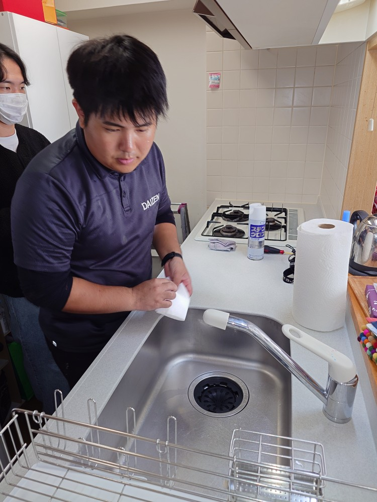
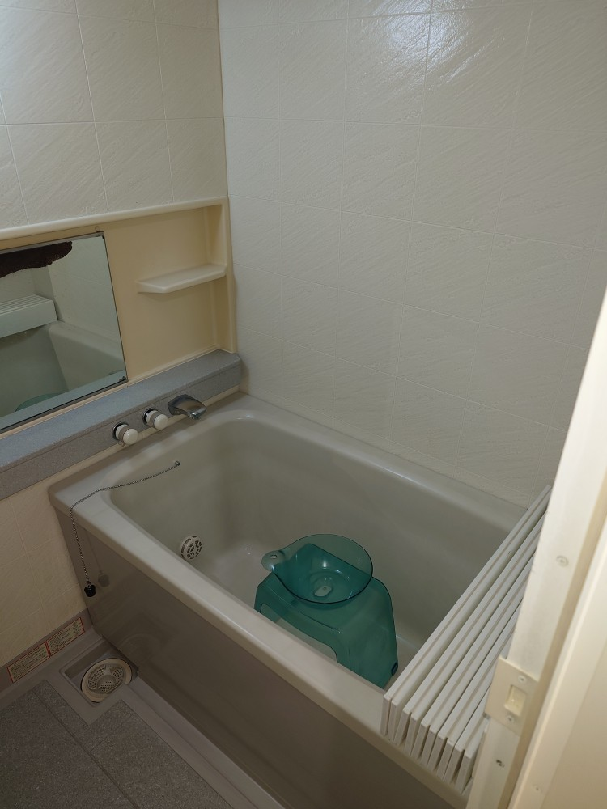
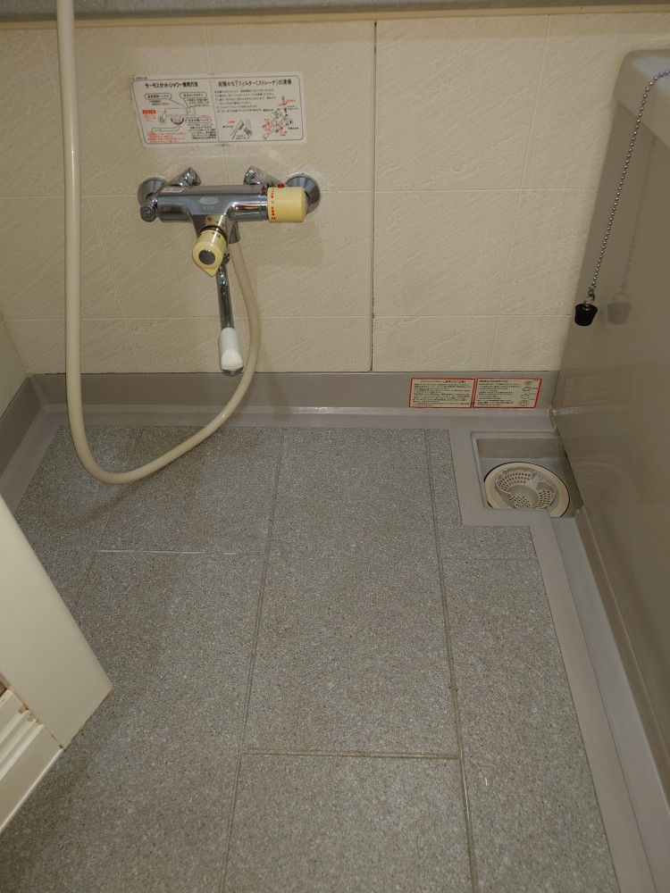
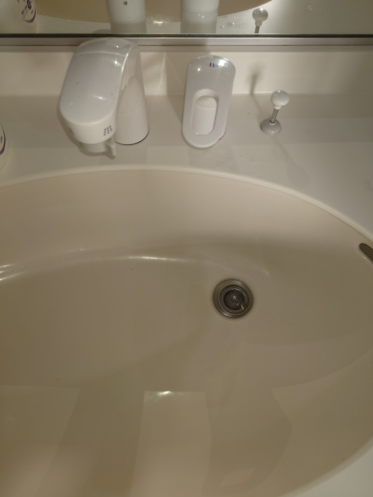
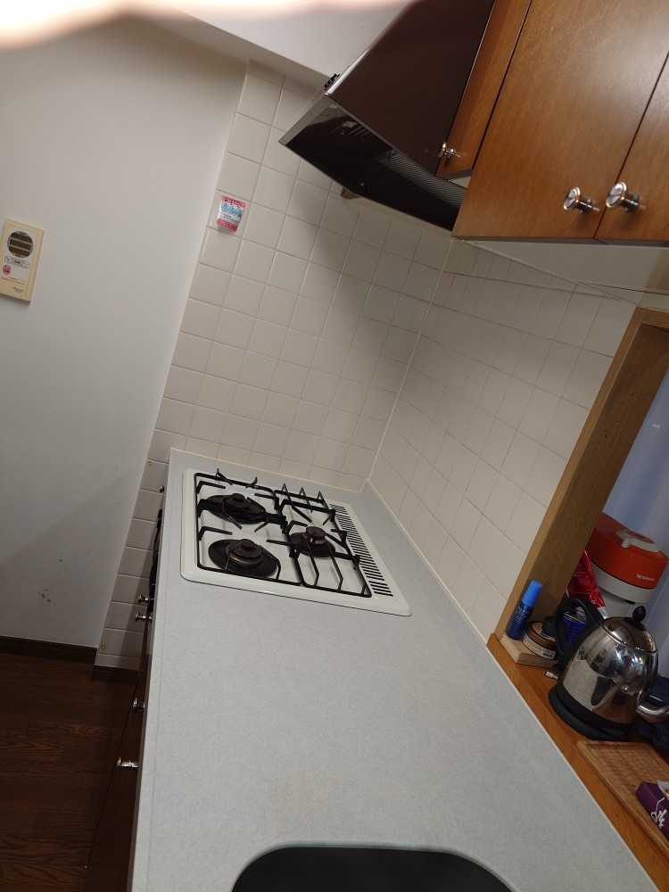
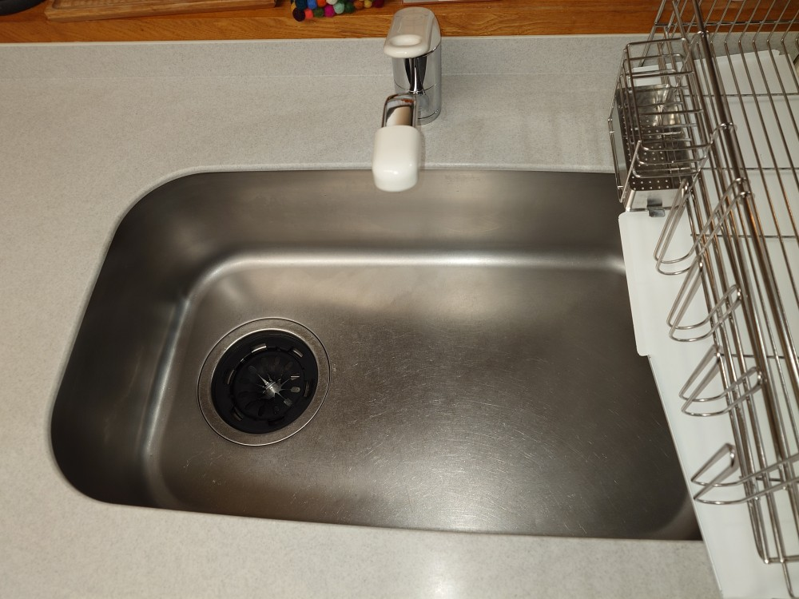
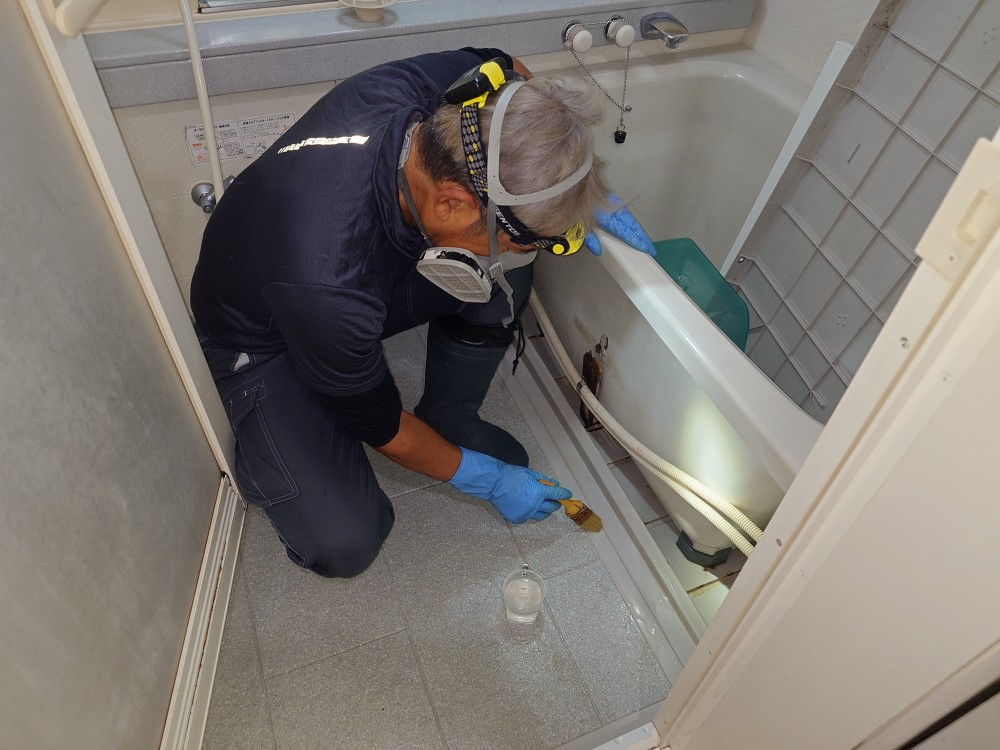

東京都渋谷区千駄ヶ谷のマンションT様ご自宅の、年末水回りスペシャルクリーニングと年末エアコンプロフェッショナルクリーニングを同時に実施しました!

千駄ヶ谷のT様ご自宅は、新宿御苑の目の前に在りとても閑静で素敵なエリアの美しいマンションです。毎年リピーターさんとしてDAIZENプロフェッショナルメソッドのご利用をチョイスして頂いております。もちろんリピーターさんなので、「リピーターさん特別価格」でDAIZENメソッドをフルに実施させて頂いております！今回のクリーニングは、水回りプレミアムセット（キッチン、キッチン換気扇、浴室、お手洗い、洗面台）のフルセットと、リビングのお掃除機能付きタイプのエアコン、寝室の壁掛けノーマルタイプのエアコンをターゲットとして、1日で全て綺麗にクリーニング実施しました!リピートクリーニングなので、我々DAIZENメンバーも、T様の水回り各所、エアコン各所を詳しく覚えておりますので、とても順調に、そして的確・正確・確実に美しくクリーニング出来ます！ぜひ、DAIZENのプロフェッショナルクリーニングメソッドを、リピート利用してください、とてもお得です、宜しくお願いいたします！





